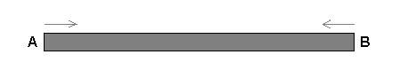

Problem E
Infinite Race
Input: Standard Input
Output: Standard Output
Time Limit: 2 Seconds
Consider a trail, AB with no friction. There are two racers at two ends of the trail

Racer1 starts at A with constant velocity u. Racer2 starts at B with constant velocity v. Both turn back when they reach at the other end. In this way they continue racing indefinitely. On the way they meet each other while crossing or overtaking. They also meet at the ends. In this problem you have to find how many times they meet if the race continue for t unit of time. You should consider that it takes no time to change direction at the end of the trail.
Input
Each input set consists of 4 (signed 32-bit)
non-negative integers, L, u, v, t in a single line. Here L denotes the length of
the trail AB which is non zero. Input terminates with a data set where L=0.
This case should not be processed. Please note that there are 10018 lines in the input file.
For each input set print in a line the number of times they meet.
|
2 1 10 5 5 410 5 10 410 10 10 40 0 0 0 |
23
4 |